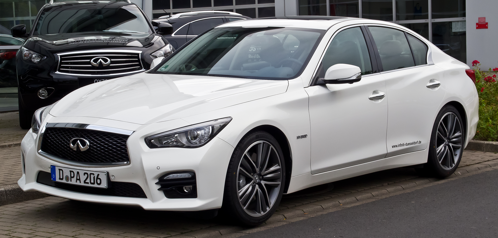
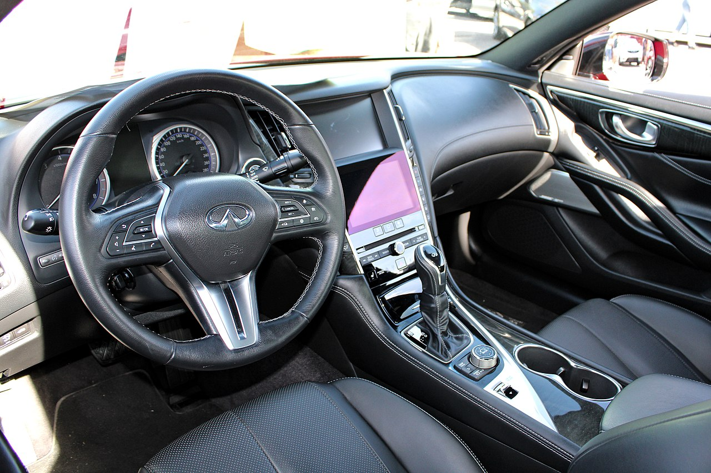

Infiniti Q50
Infiniti Q50 — седан середнього класу виробництва японської компанії Infiniti, який в 2013 році замінив Infiniti G.
В Японії він продається під назвою Nissan Skyline V37.
Зміст
Опис
15 січня 2013 року на автосалоні в Детройті представлено Infiniti Q50. Автомобіль побудований на модернізованій платформі Nissan FM (front midship), як і Infiniti G37. У моторній гамі з'явився модернізований двигун 3,7 л V6 VQ37VHR потужністю 328 к.с., гібридна версія 3,5 л V6 VQ35HR сумарною потужністю 364 к.с., а також турбодизель 2,2 л OM651DE22LA з системою Common rail потужністю 170 к.с. виробництва Mercedes-Benz. Автомобіль отримав повний або задній привод. У продаж седан, надійшов навесні 2013 року.
Для Китайського ринку автомобіль отримує 2,0-літровий бензиновий турбо двигун потужністю 211 к.с. (від Mercedes-Benz Е-класу).
Представляючи автомобіль, японська компанія Nissan, ознаменувала початок нової стратегії маркування автомобільної продукції, згідно з якою кросовери і позашляховики будуть починатися з букв QX, а легкові машини з Q.
В 2020 році було додано підтримку сервісів Apple CarPlay і Android Auto в стандартну комплектацію. Також з виробництва зняли чотирициліндровий двигун для моделі Q50.
Infiniti оновила Q50 для 2021 модельного року. Седан отримав нову комплектацію Sensory. Лінійка кольорів кузова поповнилась двома відтінками сірого та синього[2].
Характеристики
Q50 PURE
- Двигун 2.0 turbo 211 к.с.
- Сенсорний дисплей управління мультімедійними функціями і клімат-контролем
- Система Start & Stop
- Двухзоний клімат-контроль
- Камера заднього виду
- Комбіноване оздоблення салону: шкіра + тканина
Продажі
2013 рік - 17,816 автомобілів
2014 рік - 36,899 автомобілів
2015 рік - 43,874 автомобілів
2016 рік - 44,007 автомобілів
2017 рік - 40,739 автомобілів
Безпека
Нова Infiniti Q50 2021 отримала вищі бали від Страхового інституту дорожньої безпеки США у всіх чотирьох проведених краш-тестах та найвищий рейтинг Superior від американського IIHS за стандартну систему запобігання зіткненням між транспортними засобами
Хоча Infiniti дійсно пропонує безліч технологій допомоги водієві, більшість цього обладнання недоступна в базовій моделі.
Розміри та вага
Кузов Q50 має довжину 4.8 м, а споряджена маса седана коливається від 1670 до 1813 кг.
Можливі комплектації
Інфініті Ку50 2021 випускається в чотирьох комплектаціях: Pure, Luxe, Sensory і Red Sport 400. У всіх по капотом 3,0-літровий двигун V6 з подвійним турбонаддувом. Однак Infiniti Q50 мають різні технічні характеристики: у перших трьох комплектаціях двигун виробляє 300 кінських сил, а Red Sport 400 кінських сил. Семиступінчаста автоматична коробка передач та задній привід входять до стандартного оснащення, повний привід доступний у будь-якій версії.